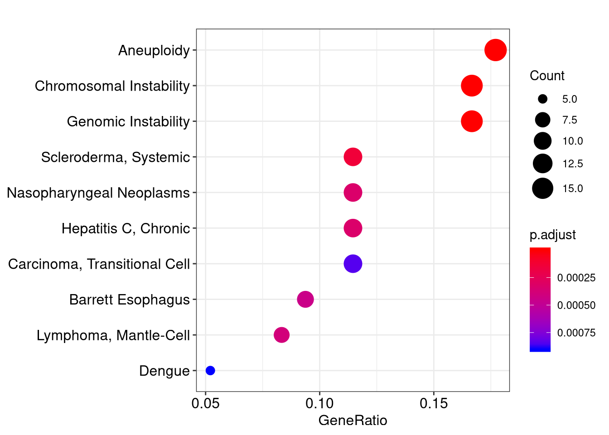
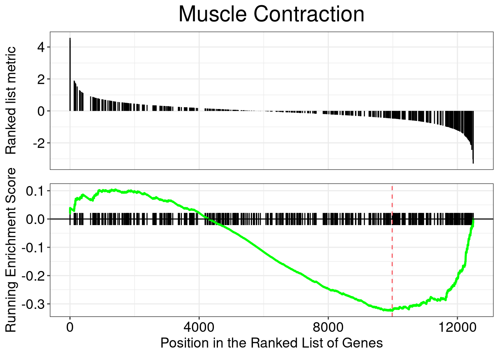

Chapter 9 MeSH Enrichment Analysis
meshes supports enrichment analysis (over-representation analysis and gene set
enrichment analysis) of gene list or whole expression profile using MeSH
annotation. Data source from gendoo, gene2pubmed and RBBH are all
supported. User can selecte interesting category to test. All 16
categories are supported. The analysis supports >70 species listed in MeSHDb BiocView.
For algorithm details, please refer to the vignettes of DOSE(Yu et al. 2015) package.
library(meshes)
data(geneList, package="DOSE")
de <- names(geneList)[1:100]
x <- enrichMeSH(de, MeSHDb = "MeSH.Hsa.eg.db", database='gendoo', category = 'C')
head(x)## ID Description GeneRatio
## D043171 D043171 Chromosomal Instability 16/96
## D000782 D000782 Aneuploidy 17/96
## D042822 D042822 Genomic Instability 16/96
## D012595 D012595 Scleroderma, Systemic 11/96
## D009303 D009303 Nasopharyngeal Neoplasms 11/96
## D019698 D019698 Hepatitis C, Chronic 11/96
## BgRatio pvalue p.adjust qvalue
## D043171 198/16528 2.794765e-14 2.459394e-11 1.815127e-11
## D000782 320/16528 3.866830e-12 1.701405e-09 1.255702e-09
## D042822 312/16528 3.007419e-11 8.821761e-09 6.510798e-09
## D012595 279/16528 6.449334e-07 1.418854e-04 1.047168e-04
## D009303 314/16528 2.049315e-06 3.295389e-04 2.432123e-04
## D019698 317/16528 2.246856e-06 3.295389e-04 2.432123e-04
## geneID
## D043171 4312/991/2305/1062/4605/10403/7153/55355/4751/4085/81620/332/7272/9212/1111/6790
## D000782 4312/55143/991/1062/7153/4751/79019/55839/890/983/4085/332/7272/9212/8208/1111/6790
## D042822 55143/991/1062/4605/7153/1381/9787/4751/10635/890/4085/81620/332/9212/1111/6790
## D012595 4312/6280/1062/4605/7153/3627/4283/6362/7850/3002/4321
## D009303 4312/7153/3627/6241/983/4085/5918/332/3002/4321/6790
## D019698 4312/3627/10563/6373/4283/983/6362/7850/332/3002/3620
## Count
## D043171 16
## D000782 17
## D042822 16
## D012595 11
## D009303 11
## D019698 11In the over-representation analysis, we use data source from gendoo and C (Diseases) category.
In the following example, we use data source from gene2pubmed and test category G (Phenomena and Processes) using GSEA.
## ID Description setSize enrichmentScore
## D009043 D009043 Motor Activity 462 -0.3223426
## D009119 D009119 Muscle Contraction 437 -0.3248434
## D006339 D006339 Heart Rate 336 -0.3640991
## D049629 D049629 Waist-Hip Ratio 321 -0.3659337
## D001846 D001846 Bone Development 322 -0.3722690
## D015430 D015430 Weight Gain 310 -0.3691788
## NES pvalue p.adjust qvalues rank
## D009043 -1.446332 0.001219512 0.0361485 0.0263196 2176
## D009119 -1.446892 0.001236094 0.0361485 0.0263196 2517
## D006339 -1.589642 0.001272265 0.0361485 0.0263196 2405
## D049629 -1.591009 0.001287001 0.0361485 0.0263196 2176
## D001846 -1.617110 0.001293661 0.0361485 0.0263196 2100
## D015430 -1.599180 0.001298701 0.0361485 0.0263196 1998
## leading_edge
## D009043 tags=23%, list=17%, signal=20%
## D009119 tags=27%, list=20%, signal=22%
## D006339 tags=29%, list=19%, signal=24%
## D049629 tags=27%, list=17%, signal=23%
## D001846 tags=27%, list=17%, signal=23%
## D015430 tags=24%, list=16%, signal=20%
## core_enrichment
## D009043 10550/9759/23405/1499/6453/8945/7157/25970/627/408/2908/22881/27445/11132/2752/9445/6548/2571/23621/3082/1291/2915/1543/7466/3240/3350/947/55304/181/3632/2169/27306/1621/80169/9627/196/8678/8863/23284/81627/4692/5799/11076/2259/3087/1278/283/1277/3953/4747/2247/6414/210/4744/5468/8835/89795/4023/8522/4319/3485/3952/79068/8864/4313/2944/2273/2099/3480/8528/4908/56892/3339/5138/57161/4741/4306/6571/79750/4915/5744/2487/58503/347/6863/2952/5327/367/4982/4128/4059/3572/150/7060/9358/7166/3479/9254/5348/4129/9370/3708/1311/5105/4137/1408/5241
## D009119 10174/2150/5562/3611/22859/4604/7070/4985/7139/3784/154/1760/3315/9732/72/5595/3092/6416/9759/270/6558/627/953/408/2908/7138/5563/6794/5564/3567/2104/845/3371/6548/831/182/3554/126393/7402/1129/7201/3350/5590/5592/7168/79923/2149/4628/23426/8082/5021/2318/23284/844/79026/4208/3790/2308/1907/253959/54795/4311/2247/10580/1848/2281/10398/5166/50507/1012/6876/10203/83700/11167/2317/3952/3778/1009/5733/10468/3693/6253/9499/7481/5159/3991/857/1289/1909/6678/7041/32/8639/5350/3551/1264/2697/185/55107/7043/3357/2205/253190/5327/25802/1634/3572/8490/3679/3479/5348/9370/9122/4629/652/7021/5241
## D006339 4985/7139/8929/3784/10681/3375/154/1760/9781/5139/118/2702/6532/6416/2869/270/7157/627/2908/7138/5563/3643/1129/7779/947/1901/2034/4179/4804/64388/1621/4881/8863/5021/844/4212/11030/5797/6403/4803/84059/79789/5176/3953/5243/5468/1012/2868/5793/4023/7056/3952/5577/126/2946/3778/477/5733/4313/2944/9201/3075/9499/2273/2099/1471/857/775/5138/4306/4487/213/5350/5744/23245/2152/2697/2791/185/6863/2952/5327/80206/2200/9607/3572/150/8490/3479/2006/55259/9370/125/652/55351
## D049629 8609/9563/23405/10206/7157/23314/4776/25970/627/2908/490/4057/268/3567/23429/283450/1543/3240/3174/81490/23047/55304/5099/54808/4179/2169/948/8082/4018/54465/4256/3087/5919/253461/26470/10903/1581/56172/3953/5950/5468/1012/8835/4023/594/4214/7350/3952/79068/51232/2202/6444/9369/2099/6833/3991/4016/2690/57161/79750/4915/5125/5167/8639/11188/10631/3551/2487/2697/6935/3487/367/4982/3667/4059/150/9358/1489/3479/6424/9370/4629/652/5346/7021/4239/5241
## D001846 8945/7157/57798/79048/627/6500/8038/4057/860/2752/4882/3371/2915/5745/63971/54455/3791/819/57045/596/2034/54808/80781/1280/64388/2261/4054/11059/3483/9900/26234/4734/9452/4208/4322/253461/1278/7048/51280/10903/30008/7869/1277/3953/10516/10411/8835/79776/11167/2317/3485/3952/5274/54681/4488/10486/1009/2202/91851/2099/5764/23327/3339/8817/83716/6678/4915/633/658/54361/5744/165/5654/10631/3487/367/4982/3667/79971/1634/3479/114899/9370/652/8614/4969
## D015430 627/2908/5563/108/1387/2752/3910/2571/5914/12/2915/4153/2863/1129/7466/3350/596/181/2746/3067/1621/9627/590/3087/6785/5176/3953/5950/2166/1293/5243/5468/54551/4023/7350/3952/5577/3176/79068/3625/2944/9369/6720/2099/3991/857/2690/6571/4915/1191/32/9135/5654/347/2697/3357/2952/2891/367/25802/4128/9607/3572/150/7166/3479/6505/4129/9370/2167/5346/5241User can use visualization methods implemented in enrichplot (i.e.barplot, dotplot, cnetplot, emapplot and gseaplot) to visualize these enrichment results. With these visualization methods, it’s much easier to interpret enriched results.


References
Yu, Guangchuang, Li-Gen Wang, Guang-Rong Yan, and Qing-Yu He. 2015. “DOSE: An R/Bioconductor Package for Disease Ontology Semantic and Enrichment Analysis.” Bioinformatics 31 (4): 608–9. https://doi.org/10.1093/bioinformatics/btu684.